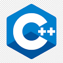

My skills
html
90%
css
85%
javascript
25%
sass
85%

C++
years of experience
Social Media Promotion
project completed
Online Cource Certeficate
I am a student at Unity University pursuing a degree in Computer Science. During my studies, I have gained a considerable amount of knowledge and experience in various programming languages, including C++, Java, HTML, CSS, JS, and PHP. Additionally, I have taken online courses through platforms like Coursera and SoloLearn, and have obtained certifications through these programs. My dedication to learning and expanding my skills in the tech industry is impressive, and my passion for programming is evident through my pursuit of certifications and completion of online courses. My experience in multiple programming languages demonstrates my versatility and adaptability as a programmer, which are valuable qualities in the constantly evolving tech industry.
I am a driven and hardworking student, i was learning in grade 11 at Hawas Preparatory School. With a clear goal in mind, I am dedicated to achieving academic excellence and pushing myself to reach my full potential. As I move on to grade 12 at Nafyad School, I am confident in my ability to excel and make the most of the opportunities presented to me. My impressive score of 496 on the Ethiopian grade University entrance exam is a testament to my determination and academic prowess. I am eager to continue pursuing my education and expanding my knowledge, with the ultimate goal of making a positive impact in my community and beyond
I learned a lot during my time at Nafyad, especially during my 9th and 10th grade. Achieving a 3.8 matric result was a huge accomplishment for me, and I'm grateful for the education I received there. High school is an essential period for personal growth and academic performance, and I feel that my time at Nafyad helped me develop skills that will be valuable in my future endeavors. Overall, I'm proud of what I achieved, and I'm excited to see what the future holds for me!
I attended Kebron International School in Addis Ababa from grade 1 to 8, and achieved a 97% score in my Ethiopian Ministry results. I was also a top three student in my grade 8 class, demonstrating my dedication to academic excellence. I am proud of my achievements and look forward to continuing my educational journey with enthusiasm.